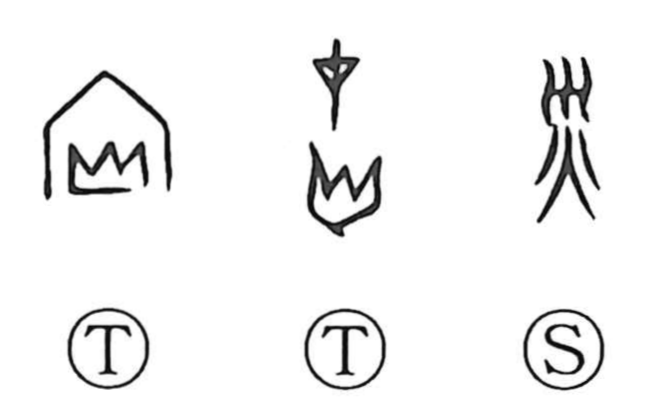

災

Kun: wazawai | On: sai
disaster ・ calamity
Explanation
災 is a compound graph that sets the sign for a surging water current atop the fire element. In early forms, the upper component alone pictured a stream choked and overflowing, evoking a flood as a water-borne calamity. When combined with 火, the idea broadened to include conflagration (as in kasai), and from there the character came to signify misfortune and natural calamity in general. Early lexica such as the Shuowen also record forms placed under the fire category, reflecting this association.